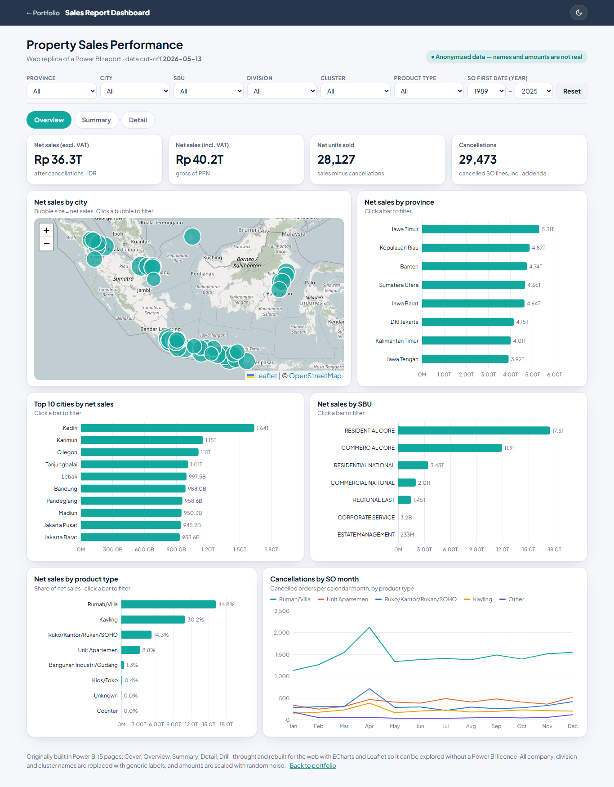

Ringkasan eksekutif
Sales Report Dashboard adalah laporan penjualan properti yang interaktif. Awalnya dirancang di Power BI untuk stakeholder yang butuh gambaran cepat performa komersial (dari mana penjualan datang, unit bisnis mana yang mendorongnya, dan di mana pembatalan terjadi), lalu dibangun ulang sebagai halaman web statis supaya siapa saja bisa mencobanya tanpa lisensi Power BI.

Fitur
Filter global
Province, City, SBU, Division, Cluster, Product type, dan rentang tahun SO. Daftar City menyesuaikan provinsi yang dipilih.
Klik untuk cross-filter
Klik bar atau bubble di peta untuk langsung memakai nilai itu sebagai filter, seperti cross-filter di Power BI.
Peta penjualan
Peta bubble net sales per kota; luas bubble sebanding dengan net sales.
Perbandingan berperingkat
Net sales per provinsi, 10 kota teratas, SBU, dan tipe produk (dengan persentase dari total).
Tren pembatalan
Order batal per bulan, dipecah per empat tipe produk utama ditambah Other.
Tabel ringkasan & detail
Ringkasan provinsi → kota yang bisa di-expand, dan tabel detail yang bisa di-sort, dicari, dan dipaginasi.
Mode terang & gelap
Mengikuti pengaturan sistem dan tombol tema portofolio; warna chart divalidasi ulang untuk tiap mode.
Responsif
Bisa dipakai di HP: filter dan chart tersusun ke bawah, angka sumbu disembunyikan saat ruang sempit.
Privasi sejak desain
Tidak ada nama atau nilai asli yang dipublikasikan; file asli tetap di repository privat.
Halaman report: Power BI → web
Setiap halaman dan visual Power BI punya padanan di web:
| Halaman Power BI | Visual Power BI | Dashboard web |
|---|---|---|
| Cover | Judul, logo, kartu Last Refreshed | Header halaman dengan tanggal cut-off data (tanpa logo perusahaan) |
| Overview | Slicer (7) | Filter bar menempel, dipakai bersama semua tab |
| Overview | Azure Map (Province, City) | Peta bubble Leaflet di OpenStreetMap |
| Overview | Bar chart Top 10 (Province, City, SBU) | Bar horizontal ECharts dengan label nilai |
| Overview | Donut: net sales per tipe produk | Bar berperingkat dengan % (lebih mudah membandingkan nilai yang mirip) |
| Overview | Line: Cancellation Province per bulan | Line chart per tipe produk |
| Summary | Matrix (Province → City → SBU → Division → Cluster) | Tabel Province → City yang bisa di-expand, dengan total |
| Detail | Tabel | Tabel dengan sort, pencarian, dan paginasi |
| Detail | Drill Through | Halaman drill-through | Diganti klik-untuk-filter + tab Detail |
Definisi metrik
| Metrik | Definisi | Kolom sumber |
|---|---|---|
| Net sales (excl. PPN) | Jumlah net sales tanpa PPN. Baris pembatalan bernilai negatif, jadi angka ini sudah dikurangi pembatalan. | SalesNetExPPNAmt |
| Net sales (incl. PPN) | Sama seperti di atas, termasuk PPN. | SalesNettInPPNAmt |
| Unit terjual (net) | Jumlah kuantitas unit: +1 untuk baris penjualan, −1 untuk baris pembatalan. | UnitQty |
| Pembatalan | Jumlah baris sales order dengan tipe order pembatalan (ZC01 / ZC02). Termasuk addendum batal-lalu-buat-ulang. | OrderType → IsCancel |
| Filter tahun | Tahun dari tanggal sales order pertama. | SOFirstDate |
| Bulan pembatalan | Bulan kalender dari tanggal sales order. | MonthSODateNumber |
Nilai ditampilkan dalam rupiah dengan T = triliun, B = miliar, M = juta.
Arsitektur
Tanpa backend
Satu file HTML plus data.json. Agregasi untuk setiap kombinasi filter dihitung di browser dalam hitungan milidetik.
Data ringkas
Nilai teks disimpan sekali di kamus dan baris merujuk lewat indeks: 2,2 MB mentah, sekitar 0,5 MB setelah gzip.
Library
Apache ECharts 5.5 untuk chart, Leaflet 1.9 dengan tile OpenStreetMap untuk peta, keduanya dimuat dari CDN.
Data & anonimisasi
Sumbernya adalah view sales order yang diekspor ke Excel. Sebelum dipublikasikan, setiap nilai yang bisa mengidentifikasi sudah diganti:
| Kolom | Asli | Dipublikasikan |
|---|---|---|
| Perusahaan | Nama badan usaha asli | Company A, B, C… |
| SBU | Nama unit bisnis termasuk lokasi | Generik: Residential Core, Commercial Core, Regional East… |
| Divisi | Nama divisi asli | Division A, B, C… |
| Cluster (373) | Nama proyek / cluster asli | Cluster 001, 002… |
| Nilai | Nilai rupiah asli | × faktor acak tersembunyi, ditambah noise ±15% per baris |
| Tipe order | ZS01, ZC01, … | Dihapus; hanya flag turunan IsCancel yang disimpan |
| Provinsi, kota, tanggal, tipe produk | — | Tetap (tidak mengidentifikasi) |
Cara pakai
Mulai dari Overview
Kartu KPI menampilkan total untuk filter saat ini; peta dan bar menunjukkan asal penjualan.
Persempit
Pilih nilai di filter bar, atau klik bar atau bubble. Tekan Reset untuk menghapus semua filter.
Bandingkan wilayah
Buka Summary lalu klik provinsi untuk melihat kota-kotanya berdampingan.
Cari baris tertentu
Buka Detail, cari berdasarkan kota, perusahaan, atau cluster, lalu klik judul kolom untuk mengurutkan.
Tips: tab bisa dibuka langsung lewat link, misalnya …/#summary atau …/#detail.
Jalankan lokal
Halaman memuat data.json dengan fetch, jadi jalankan folder lewat HTTP, jangan buka file-nya langsung:
git clone https://github.com/diimasogan/PowerBI-SalesReport-Dashboard.git cd PowerBI-SalesReport-Dashboard python3 -m http.server 8000 # buka http://localhost:8000
Untuk membangun ulang dokumentasi ini setelah mengubah teks:
python3 -I docs/_source/build_docs.py
Keterbatasan & catatan
- Angka sudah dianonimkan dan tidak boleh dibaca sebagai hasil bisnis yang sebenarnya.
- Metrik Cancellations menghitung baris order ZC01/ZC02. Metrik ini meniru, tetapi bisa saja tidak persis sama dengan, measure Power BI asli
Cancellation Province. - Filter tanggal bekerja per tahun (Power BI memakai slicer rentang tanggal).
- Drill-through diganti dengan klik-untuk-filter ditambah tab Detail.
- Bubble di peta memakai koordinat pusat kota standar, karena koordinat di data sumber hanya menunjuk satu lokasi proyek.
- File .pbix dan data sumber asli disimpan di repository privat terpisah.